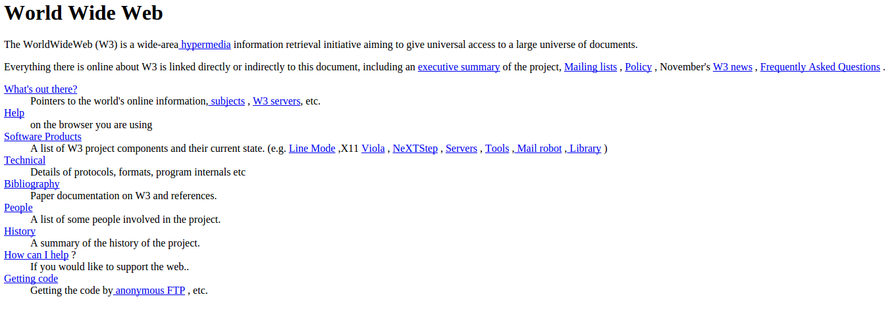
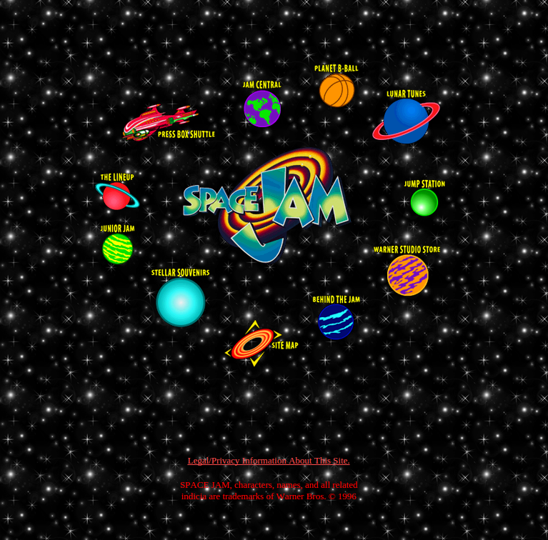

Leveraging Web Technologies for Neurological Data Visualization
Tarek Sherif
McGill Centre for Integrative Neuroscience
The Web was...
and then it was
But things have changed...

Why do you care?
Why do you care?
The Web is everywhere!
- No issues with installation
-
Remote visualization without moving data around
- Data sharing
- Collaboration
Why do you care?
It's easy
Why do you care?
It's powerful
So what's different now?
- JavaScript sucks less
- WebGL and HTML5 for high-perfomance graphics
- Web Workers for multithreading
- And more!

Standards Compliant
-
BrainBrowser uses standards-compliant web technologies
- HTML5
- CSS
- JavaScript
- Canvas
- WebGL (three.js)
- Standard technologies for developers
-
No plugins to install for users
- No Java, Flash, Unity, etc.
Volume Viewer
-
Navigate volumetric data in a slice-by-slice manner
- Load one or more volumes
- Navigate through the data

Load Volumes
- Currently, only MINC data is supported
- Load raw and header data
- Plugin architecture leaves door open for other formats
- Structural or functional data
- Multiple volumes can be overlayed
Navigate
- Sagittal, Coronal and Transverse slices are displayed for a given point in 3D space
- Manipulate the point being viewed by moving a cursor with the mouse
- Step through time increments for functional data
Demos
Surface Viewer
- Manipulate surface data in real-time 3D
- Load one or more surfaces
- Load intensity data
- Manipulate the data
Load Surfaces
-
Supported formats:
- MNI Object (polygon or line data)
- Wavefront Object
- Freesurfer ASCII
-
Extensible plugin architecture
- If you write a parser for another file format, it can simply be added to BrainBrowser
Load Intensity Data
- MNI TXT and Freesurfer ASC currently supported
-
Extensible plugin architecture
- If you write a parser for another file format, it can simply be added to BrainBrowser
- Essentially any per-vertex data format
-
Optionally tie other data to vertices
- Region information
- Text descriptions
- Images
Manipulate the Data
- Rotate, pan, zoom
- Change range of intensities displayed
- Adjust transparency on different parts of the surface
- View mesh
Demos
Using BrainBrowser
-
Try out the demos:
https://brainbrowser.cbrain.mcgill.ca
- Try out your own data!
-
Download the JavaScript library and add it to your website
- Fine-grained control over configuration
- Extend with plugins
- Must be programmed
-
Use the web service
- Loads all libraries and dependencies
- Some aspects can be configured without programming
- Surface Viewer only
Thanks!
Questions or feedback?